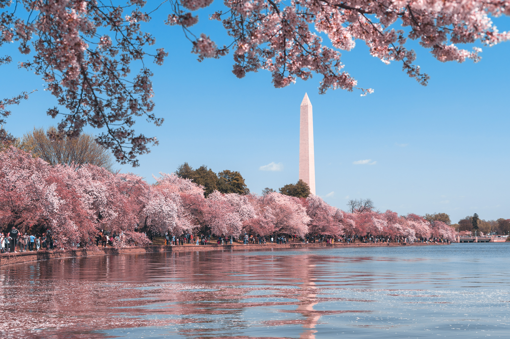

Amazing article about Washington DC
The capital of the USThe capital of the United States has a lot to offer visitors, not least its wallet-friendliness: most of its many world-class museums, monuments and galleries are free. Whether you’ve seen Washington DC on the news, in The West Wing or at the movies, it’s always thrilling to view the likes of the White House, the Capitol Building and the Washington Monument up close for yourself, or stand on the National Mall where Martin Luther King dared to dream. The city is relatively compact and downtown is built on a grid system, so finding your way from A to B is straightforward. Throw in world-class restaurants and friendly neighbourhood bars and you’ll see why a few days here pass quickly. And if you don’t drive, but want a two-spot holiday, it’s easy to combine Washington with cities such as New York and Philadelphia, which are just a few hours away by train.
Cherry blossom
What to do
The Smithsonian Institution has 19 free-to-enter museums and the National Zoo under its umbrella, including the National Portrait Gallery, National Air and Space Museums (exhibits there include the Wright Brothers’ plane Kitty Hawk and Spirit of St Louis, the first plane to cross the Atlantic nonstop) and National Museum of American History, where you can see the top hat worn by Abraham Lincoln the night he was assassinated and Judy Garland’s ruby slippers from The Wizard of Oz. You need to book a timed-entry ticket in advance for some, such as the National Museum of African American History and Culture. You can take a guided visit around the Capitol, where US Congress sits, by booking online. Elsewhere on Capitol Hill* you can tour the Library of Congress and Supreme Court. Make time to stroll around the colonial-era neighbourhood of Georgetown* and watch a concert at the Kennedy Center.
Where to stay
The small centre of Washington DC is where you’ll find the majority of the city’s hotels, scattered about in both residential and business neighbourhoods. From a tourism perspective, anything close to the National Mall — home to the majority of Smithsonian museums, as well as the Capitol Building and national monuments — is a plus. As you’d expect of the capital, DC has the full spectrum of properties from upmarket hotels close to the political seat of power, such as the Willard*, the Hay-Adams* and the Jefferson*, to more budget-oriented European imports such as Yotel*, CitizenM* and Generator*. For a more residential vibe with bars and restaurants to hand, try areas slightly further out such as Dupont Circle and Foggy Bottom. And if you really want to save money consider a chain hotel in the suburbs, somewhere like Chevy Chase or Bethesda (where Marriott has its HQ) in Maryland, or Rosslyn in Arlington or Alexandria in Virginia. They’re only a 20-minute hop downtown on the Metro, and there are plenty of places to eat on your doorstep.